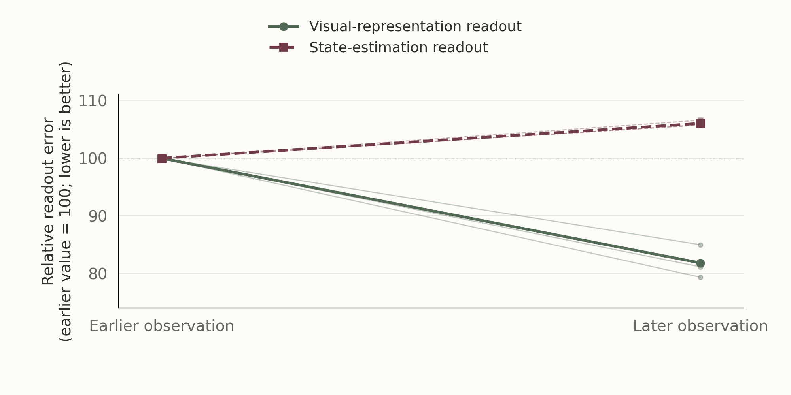

The question behind the project
A world model does several things at once: it interprets observations, forms a state estimate, and anticipates what might happen next. A single score can tell us that something changed without explaining which of these abilities changed.
My interest in this began with CLIMB, where an agent depended on imagined experience. I wanted to understand when that experience could be trusted. At City University of Hong Kong, supervised by Prof. Yangchen Pan, I am studying the measurements that might help answer that question.
One model, different directions
In an exploratory offline study, two internal readouts of the same physical quantity moved in opposite directions as training continued. A readout of the visual representation improved, while a readout of the model's inferred state became worse. The direction repeated in three training runs on the same data split.
The figure below shows selected earlier and later observations, with each run's earlier error set to 100. It is a small piece of evidence for uneven learning within one model. It does not establish where information was lost, or which component caused the difference.

The measurement is part of the problem
A readout is itself a learned model. If it struggles to recover a property, the difficulty may lie in the representation, in the readout, or in the data used to fit it. I have found that changing the readout can change the apparent ordering of internal representations.
That makes measurement checks central to the research. What a readout can recover is one kind of evidence. It does not establish that the world model uses that information, and failure to recover it does not prove the information is absent.
Finding a change, and explaining it
A more detailed diagnostic has to earn its complexity. In the experiments so far, the internal readouts did not provide a consistent earlier warning than quantities already available in the training losses. Their possible value is in distinguishing what changes inside the model.
I am also treating diagnosis and improvement as separate claims. A plausible explanation does not guarantee that the intervention it suggests will work. The explanation needs a test, and the resulting change needs comparison with simple alternatives.
Understanding the present, predicting the future
A model can become better at representing its current observations without becoming better at predicting far ahead. In the current experiments, short-range gains have not established long-horizon gains. Whether the changes improve an agent's behaviour is still an open question.
This is the connection I want to understand: which internal changes matter for the experience an agent imagines, and which measurements can help us reason about that experience.
Where the evidence stands
This is ongoing, unpublished research. The figure is an exploratory observation from three training runs sharing one dataset and split; the evaluation data were excluded from world-model training but have been reused during analysis. It is not fresh independent confirmation or a general result about all world models.
This public note shares observations and research intuition. The diagnostic implementation, specific intervention choices, configurations, and full experimental records remain private while the study develops. I lead the project independently as a Research Assistant at City University of Hong Kong, supervised by Prof. Yangchen Pan, since October 2026.
Updated November 2026